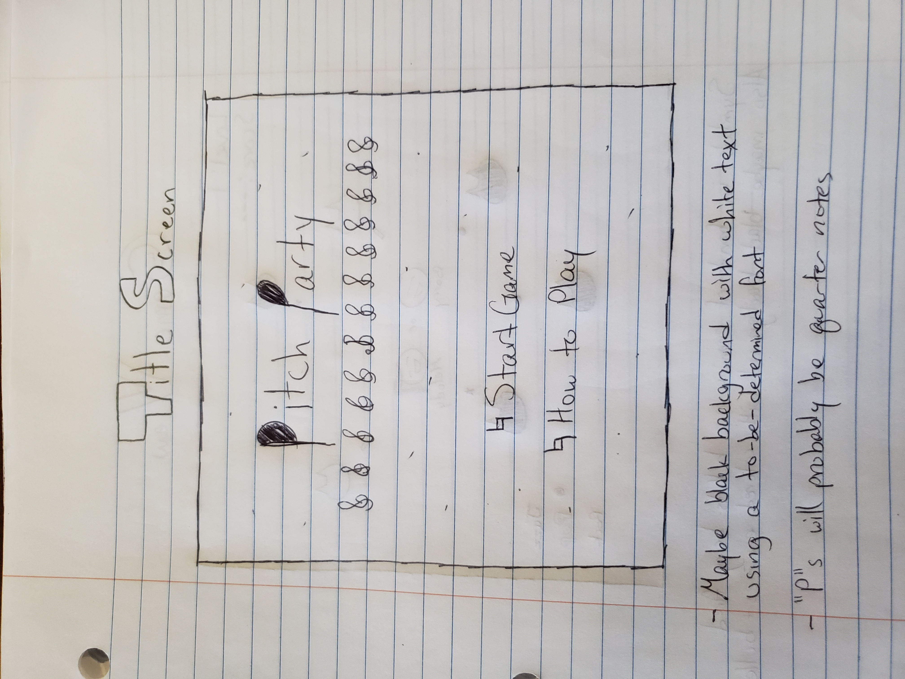
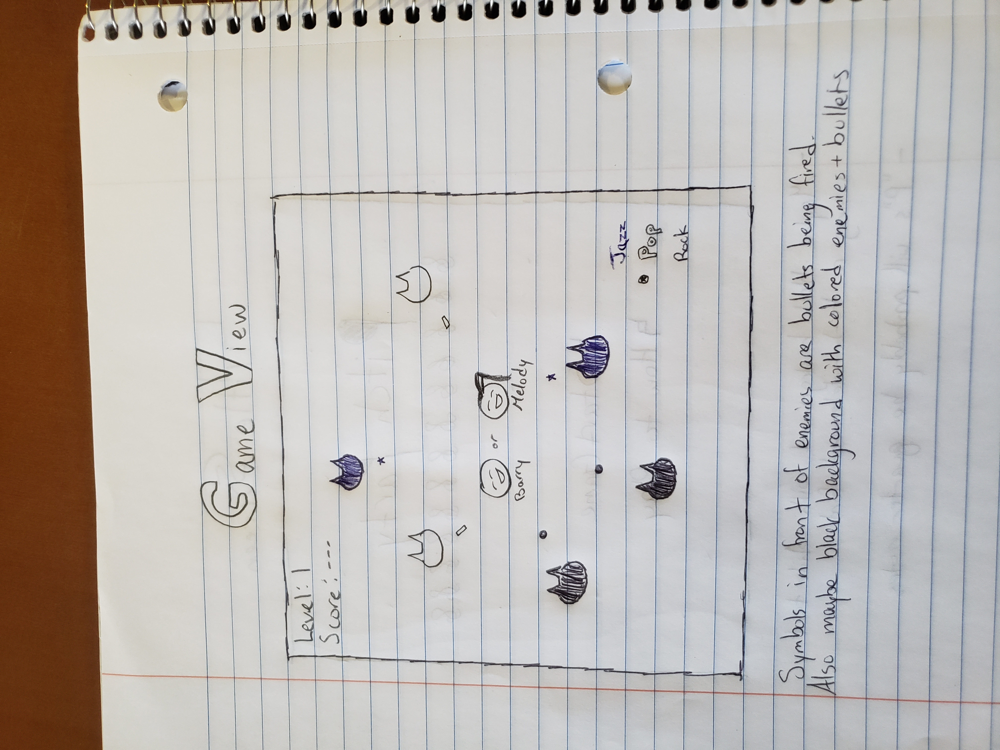

"The player is being surrounded by a crowd of "deafeners" and must survive for as long as they can. Choose one of 2 characters, Barry or Melody, and fight back using the power of the harmony bullets!"
The genre of the game is a survival shooter.
The platform for the game will be for desktop only.
The siblings in music, Barry and Melody, are lost and can't find their way home to Crescendis City. Suddenly, crawling from the depths of the shadows the deafeners appear. These demons are known for destroying the hearing and voice of anyone they scream at. Equipped with the Tuning Guns and Harmony Bullets, Barry and Melody work together to escape the deafeners and make it back to Crescendis City.
The style the game might be something along the lines of pixel or block graphics with some 8-bit sounds and music for a level clear, game over, background music, and collisions.
The player will be given a view of their bullets loaded in the Tuning Cylinder on the bottom right to show what bullet is currently being used. With each new level or after a certain amount of kills, more bullet types will be added. The player uses the W/S or Up/Down arrow keys to select a bullet, the mouse to aim at a deafener and click the left-mouse button or hit the spacebar to fire a bullet at them. The color of deafener determines what bullet they're weak to. Instructions will be shown for the player either at the start screen as a selection or beside the game screen on the outside.
Title Screen
Game View
